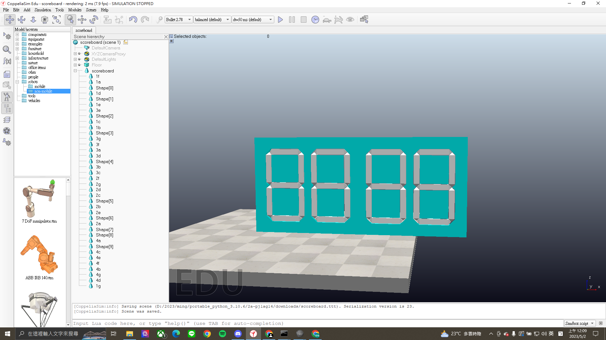
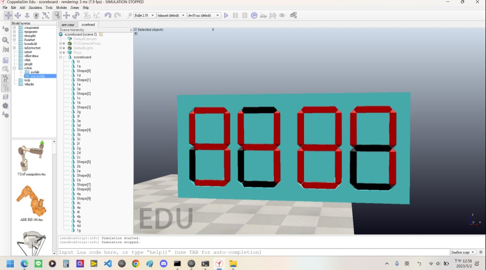
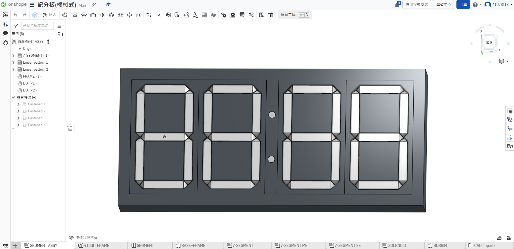
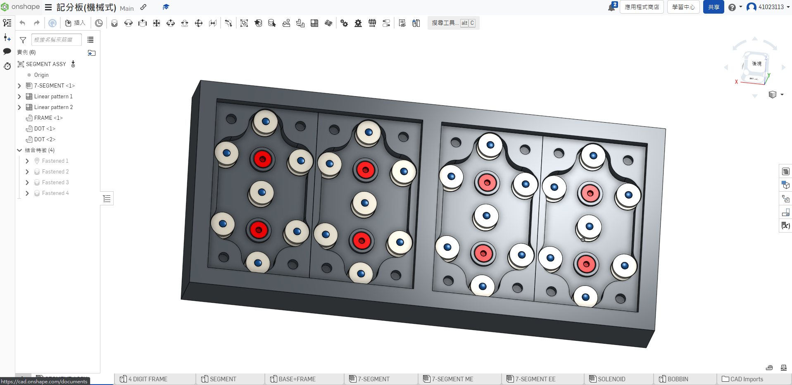

w10 <<
Previous Next >> ssh
w11
使用之前組別足球場去改版足球場.STL
測試版先使用使用長方體擺放成七段顯示器的樣子
測試1.ttt
建立方式為:
Add>Primitive shape>cuboid
(加入>原始物件>長方體)
初始第一版記分板記分板ok.stl
測試用記分板.ttt
__________________________________________________________________________
2023/5/1
場景組:
第二版記分板v1:
使用Onshape繪製我們需要的七段顯示器圖檔，繪製完成後，匯入File>Import>Mesh
，匯入後進行爆炸拆件，Edit>Gourping>Divide selected shape，因為我們是使用變換物件顏色來顯示得分數字，所以物件導入後的拆件動作件特別重要。
第二版計分版v2:
由於第二版記分板v1，無法在Coppeliasim爆炸成個別零件，無法達成我們想改變計分板顏色來實現計分功能的計畫，因此畫了第二版v2，順利完成爆炸拆件。
scoreboard.ttt

程式組:
讓元件變色的方法:
-- 取得物體句柄:
objectHandle = sim.getObjectHandle('ObjectName')
像是給程式物件的編號。
-- 取得原始顏色:
originalColor = sim.getShapeColor(objectHandle, nil, sim.colorcomponent_ambient_diffuse)
-- 定義新的顏色:
newColor = {1, 0, 0}
-- 設定新的顏色:
sim.setShapeColor(objectHandle, nil, sim.colorcomponent_ambient_diffuse, newColor)
應用上面所做的所有工作我們製作出:
四個數字都能透過顏色改變顯示0-9的功能。
影片還未推上來。
七段顯示器顯示示意畫面:

程式碼中的函數定義如下：
handles：二維陣列，用於儲存分數板上的每個數字或字母的句柄（handle），以便後續的編程控制。
color：二維陣列，儲存兩種顏色值，用於改變分數板上的數字或字母的顏色。
specialNumbers：二維陣列，儲存了每個數字或字母在分數板上的哪些線段需要亮起，以便在後續的編程控制中能夠選擇需要亮起的線段。
serialNumber：一維陣列，儲存了分數板上的字母或數字標記。
Number：用於將一個數字或字母顯示在分數板上，並且根據specialNumbers陣列中的數據將需要亮起的線段顯示為顏色color[1]。
sysCall_init：V-REP仿真環境中的初始化函數，用於將分數板上每個數字或字母的句柄儲存到handles陣列中。
sysCall_cleanup：V-REP仿真環境中的清理函數，用於將分數板上的所有數字或字母的顏色恢復為color[2]。
2023/5/1協同影片
function randomNumber()
math.randomseed(os.time())
return {tonumber(math.random(-2, 2) .. '.' .. math.random(0,9)),tonumber(math.random(-1, 1) .. '.' .. math.random(0,4)),1.0}
end
這段程式碼定義了一個名為randomNumber的函數，當被呼叫時，它會產生一個由三個數字組成的列表（list），這三個數字是從指定範圍中隨機選擇而來的。
在此函數中，首先使用math.randomseed(os.time())函數設置一個隨機數種子，以保證每次呼叫randomNumber函數時，產生的隨機數是不同的。接下來，使用math.random(-2, 2)函數從-2到2之間選擇一個整數，並使用math.random(0,9)函數從0到9之間選擇一個整數，這兩個整數組合起來成為一個小數，表示為第一個數字。同樣地，使用math.random(-1, 1)函數從-1到1之間選擇一個整數，並使用math.random(0,4)函數從0到4之間選擇一個整數，這兩個整數組合起來成為另一個小數，表示為第二個數字。最後，固定設置第三個數字為1.0，並將這三個數字放入一個列表中，作為函數的返回值。
function regress()
sim.pauseSimulation()
sim.setObjectPosition(bubbleRobBase, -1, initialBubbleRobPosition)
sim.setObjectOrientation(bubbleRobBase, -1, initialBubbleRobOrientation)
sim.setObjectPosition(ball, -1, randomNumber())
sim.setObjectOrientation(ball, -1, initialballOrientation)
sim.setObjectPosition(23, -1, initia)
sim.setObjectOrientation(23, -1, initial)
end
這段程式碼包含一個名為regress()的函數，用於將機器人和球體重置到遊戲開始時的位置。在函數內部，程式暫停模擬運行，並使用sim.setObjectPosition()和sim.setObjectOrientation()函數將機器人和球體移回初始位置。
function Toclear()
for i = 1, 7 do
for x = 1, 4 do
handle = handles[x][i]
sim.setShapeColor(handle, nil, sim.colorcomponent_ambient_diffuse, color[2])
end
end
end
Toclear的函數，它的作用是清除計分板，也就是把所有的計分板LED燈恢復到預設的顏色。
函數使用了巢狀的for迴圈，首先從1到7遍歷一遍行，然後再從1到4遍歷一遍列，這樣就可以遍歷所有的計分板LED燈。
在迴圈內部，函數通過handle變量獲取每個LED燈的控制句柄，然後使用sim.setShapeColor函數將其顏色設置為預設顏色（在color表中的索引為2的顏色）。這樣，所有的計分板LED燈都會被恢復到預設的顏色，從而達到清除計分板的目的。
function Number(displayNumber,ser)
for i = 1, 7 do
for j = 1, #specialNumbers[ser] do
if i == specialNumbers[ser][j] then
sim.setShapeColor(handles[displayNumber][i], nil, sim.colorcomponent_ambient_diffuse, color[1])
break
end
end
end
end
這段程式碼是一個顯示數字的函數，它有兩個參數，一個是要顯示的數字 displayNumber，另一個是顯示器的類型 ser。這個函數的作用是將 displayNumber 這個數字顯示在屏幕上，屏幕的類型由 ser 決定。
程式碼使用了嵌套的迴圈，第一個迴圈從 1 到 7 遍歷了七個數碼的 LED 顯示燈，第二個迴圈從 1 到 specialNumbers[ser] 的長度遍歷了指定類型的顯示屏上的特殊數碼。對於每個數碼燈，它會檢查這個燈是否是指定類型的顯示屏上的特殊數碼。如果是，它就會將該燈的顏色設置為顯示數字的顏色。
function scoreboard(number)
local numberString = tostring(number)
if #numberString < 2 then
numberString = '0' .. numberString
end
local tensDigit = tonumber(numberString:sub(1, 1))
local onesDigit = tonumber(numberString:sub(2, 2))
return{tensDigit,onesDigit}
end
這段程式碼定義了一個名為 scoreboard 的函數，該函數接受一個整數 number 作為參數，並將其轉換為兩位數的字串表示。
如果傳入的 number 參數的長度小於2，則會在數字前面添加一個0，這樣就可以確保數字的表示總是兩位數。然後，這個函數會提取這個兩位數字串的每一位數字，分別存儲在一個名為 tensDigit 的變數和一個名為 onesDigit 的變數中。最後，這個函數會返回一個包含這兩個數字的表。
__________________________________________________________________________
2023/5/7
第三版記分板:
因前面對老師的要求理解錯誤，我們做成隨得分改變顏色的記分板設計，因此做了這版來滿足老師所要求的機械式設計。


上圖紅色圓形部分為固定銷，白色圓形部分是可向前推動的銷，可實現將桿件向前推送達成數字顯示的效果。
記分板(機械式.stl)
w10 <<
Previous Next >> ssh